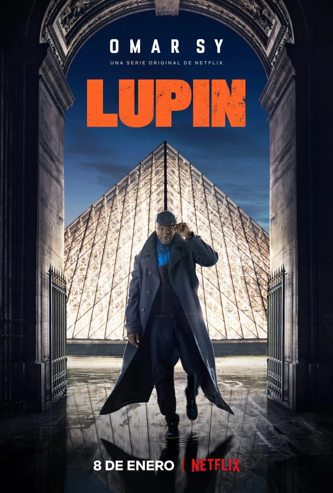

Historia de un matrimonio

Está película la vi en 2020 mientras estaba de vacaciones a punto de entrar a la universidad, debido a problemas en mi casa y problemas en mi vida personal, está película a pesar de ser bastante cruda me ayudó bastante al verla, incluso aprendí un poco de ella.
47 Ronin

Si bien está película añade elementos fantasiosos y cosas que no sucedieron a un acontecimiento real, me encanta la trama, me encanta el ritmo de la película y me encanta la actuación de Keanu Reeves como un "Samurai mestizo", tal vez no sea la mejor película del mundo, pero para mi es especial.
Los ilusionistas

Está película tiene un detalle en particular, se que la trama no tiene ningún tipo de sentido y muchas veces es incongruente, a pesar de ello no puedo evitar que me guste tanto y de vez en cuándo vuelva a verla.
Titanes del pacífico

Recuerdo haber visto está película cuándo salió en el cine, estaba muy emocionado al tratarse de robots gigantes peleando con monstruos que salían del óceano, probablemente era muy pequeño para entender el peso de la trama, pero conforme pasaron los años dejó de gustarme solo por ser una película de "Monstruos contra robots" y empezó a gustarme más por la trama de los personajes principales.
Breaking bad

Está serie la empecé a ver apenas el año pasado, ni siquiera la he visto completa pero con lo que llevo ya se volvió mi favorita sin duda alguna, la trama es excelente, los personajes están bien escritos y los actores son excelentes haciendo su trabajo, me parece una joya de serie la vea por dónde la vea.
Squid game

Vi está serie unos meses después de que salió, recuerdo no haber podido parar de verla en el momento en el que empecé, sus nueve capítulos los vi en solo dos días, eso es un record considerando que cuándo veo una serie, veo apenas uno o dos capítulos al día. Desde que la acabé he esperado la segunda temporada con muchas ansias, pero el director de la serie dijo que le tomaría el tiempo necesario. Yo no me quejo mientras salga una segunda temporada con la misma o mejor calidad que la primera.
Lupin
Está serie la empecé a ver con un amigo en una ocasión que nos quedamos a dormir en casa de otro amigo del mismo grupo. La serie trata de un ladrón fránces muy inteligente que a su vez es un excelente caballero, la trama tiene giros, elementos inesperados y hasta cliffhangers, totalmente recomendada, muy entretenida y excelente para pasar un buen rato viendo algo.
Arcane

Para finalizar porque después tendré que traducir bastante, está Arcane, serie creada por Riot Games en 2021, recuerdo no haberla visto hasta 2022, pero en cuánto la vi me sucedió algo similar a cuándo vi squid game, quedé totalmente enganchado y vi todos los capítulos en solo dos días, el guión, el ritmo de la serie, los personajes, los actores de voz, todo es perfecto en está serie, es una serie que recomiendo a todos mis amigos que juegan videojuegos.